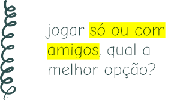
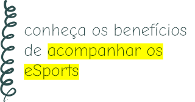
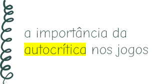
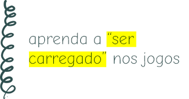
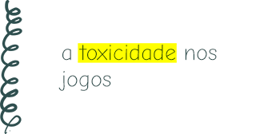
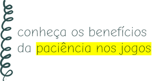
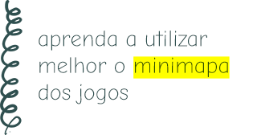

kevin quintino

29 de fevereiro de 2020
jogar só ou com amigos, qual a melhor opção?

24 de fevereiro de 2020
conheca os beneficios de acompanhar os eSports

20 de fevereiro de 2020
a importância da autocritica nos jogos

16 de fevereiro de 2020
aprenda a "ser carregado" nos jogos

12 de fevereiro de 2020
a toxicidade nos jogos

04 de fevereiro de 2020
conheça os benefícios da paciência nos jogos

02 de fevereiro de 2020